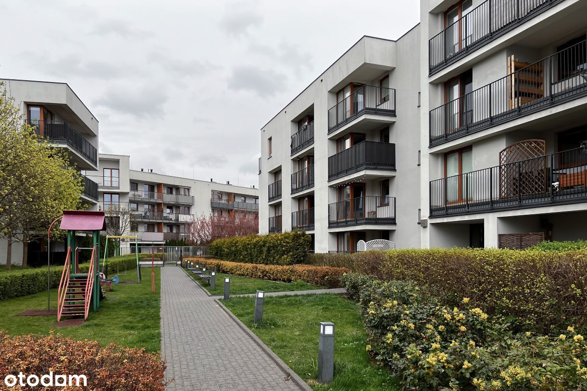
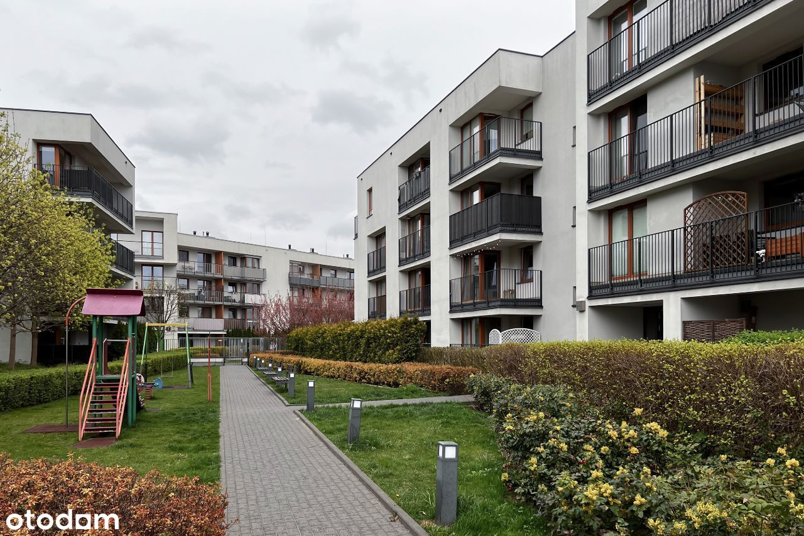

Zapraszam do zakupu funkcjonalnego, 3-pokojowego mieszkania o powierzchni 66,40 m², zlokalizowanego przy ul. Ponarskiej, na nowoczesnym i zielonym Osiedlu Wilno.
MIESZKANIE : to idealna propozycja dla rodziny z dziećmi lub jako inwestycja pod wynajem. Mieszkanie zostało wybudowane w 2013 roku było regularnie odświeżane a meble były stopniowo wymieniane na nowe co zapewnia nowoczesny i zadbany charakter wnętrza – (nie wymaga dodatkowych nakładów finansowych) . W pokojach znajdują się panele, a wszystkie pomieszczenia są umeblowane. Do dyspozycji pozostaje pełne wyposażenie AGD. W budynku dostępna jest winda, którą można zjechać bezpośrednio do hali garażowej.
Do mieszkania przynależy miejsce postojowe w garażu podziemnym (dodatkowo płatne: 40 000 zł).
Układ mieszkania (dwustronna ekspozycja – południe/zachód):
NIERUCHOMOŚĆ:
Mieszkanie znajduje się na parterze w 3-piętrowym budynku z windą, położonym przy spokojnej ulicy Ponarskiej – w jednej z najbardziej kameralnych części Osiedla Wilno. To etap inwestycji z większymi odstępami między budynkami, co zapewnia więcej prywatności i przestrzeni.
Ekspozycja na południe i zachód gwarantuje naturalne doświetlenie wnętrza przez cały dzień. Okna i loggie wychodzą na zielone patio, zapewniając mieszkańcom prywatność i spokój. Budynek wybudowany przez renomowanego dewelopera Dom Development w 2013 roku. Osiedle jest ogrodzone, bezpieczne i estetycznie zagospodarowane – idealne dla rodzin z dziećmi.
Własność: pełna własność z księgą wieczystą, możliwość kredytowania (grunty uregulowane).
Czynsz: ok. 1 150 zł
INFRASTRUKTURA I OKOLICA:
Osiedle Wilno to dynamicznie rozwijająca się część Targówka. W okolicy znajdziesz liczne sklepy, punkty usługowe, place zabaw, przedszkola, szkoły i tereny zielone. Dużym atutem jest brak strefy płatnego parkowania.
Dla aktywnych – w pobliżu znajdują się:
KOMUNIKACJA:
Znakomita lokalizacja dla osób ceniących szybki dojazd do centrum i innych dzielnic:
To idealna propozycja dla osób, które szukają komfortowego, gotowego do zamieszkania mieszkania z dużymi przestrzeniami, świetną komunikacją oraz dostępem do zieleni.
Zapraszam na prezentację!


 
